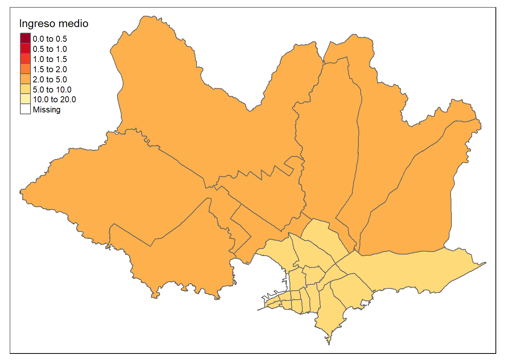
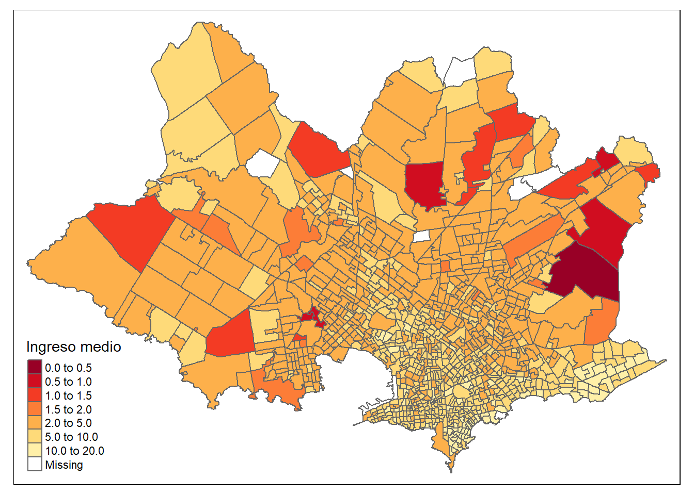

rm(list =ls())
library(rstan)
library(rstanarm)
library(tidyverse)
library(stringr)
library(scales)
library(bayesplot)
library(gridExtra)
library(gridExtra)
library(scales)
library(kableExtra)
library(formatR)
library(patchwork)Estimación del ingreso medio
CEPAL - División de Estadísticas Sociales
Uno de los primeros problemas a los que debemos enfrentarnos es la estimación del ingreso medio, la cual en una variable no simétrica que toma valores en los positivos.
Modelo bayesiano.
Para la predicción de esta variable es posible implementar el siguiente modelo.
$$ \[\begin{eqnarray*} Y_{di} &\sim & N\left(\mu_{di},\sigma_y^{2}\right)\\ \mu_{di}&=&\boldsymbol{X}_{di}^{T}\boldsymbol{\beta}+u_{d}+e_{di} \end{eqnarray*}\] $$
Donde \(Y_{di}\) representa el ingreso percapital de la \(i-ésima\) persona en el \(d-ésimo\) domino, \(\boldsymbol{X}\) es la información disponible para la \(i-ésima\) persona del \(d-ésimo\) domino, \(\boldsymbol{\beta}\) es el vector de parámetros \(u_d\) es el efecto introducido por el \(d-ésimo\) dominio y \(e_{di}\) es el error de estimación para la \(i-ésima\) personas del \(d-ésimo\) dominio.
Note, que \(u_{d}\sim N\left(0,\sigma_{u}\right)\) y \(e_{di}\sim N\left(0,\sigma_{e}^{2}\right)\).
Para este caso se asumen las distribuciones previas
\[ \begin{eqnarray*} \beta_k & \sim & N(\mu_0, \tau^2_0)\\ \sigma^2_y &\sim & Inversa-Gamma(\alpha_1,\alpha_2) \end{eqnarray*} \] las cuales se toman no informativas.
A continuación se muestra el proceso realizado para la obtención de la predicción del ingreso medio en dominios no observados.
Cargando las librerías requeridas.
Las librerías utilizada para desarrollar la metodología son las siguientes.
Un conjunto de funciones desarrolladas para realizar de forma eficiente los procesos están consignadas en la siguiente rutina.
library(printr)
source("0Funciones/funciones_mrp.R")Entre las funciones incluidas en el archivo encuentra
plot_interaction: Esta crea un diagrama de lineas donde se estudia la interacción entre las variables, en el caso de presentar un traslape de las lineas se recomienda incluir el interacción en el modelo.
Plot_Compare Puesto que es necesario realizar una homologar la información del censo y la encuesta es conveniente llevar a cabo una validación de las variables que han sido homologadas, por tanto, se espera que las proporciones resultantes del censo y la encuesta estén cercanas entre sí.
Aux_Agregado: Esta es función permite obtener estimaciones a diferentes niveles de agregación, toma mucha relevancia cuando se realiza un proceso repetitivo.
Las funciones se puedes ejecutar dado que el proceso esta estandarizado
Importando datos
Los datos empleados en esta ocasión corresponden a la ultima encuesta de hogares, la cual ha sido estandarizada por CEPAL y se encuentra disponible en BADEHOG
encuesta_mrp <- readRDS("Data/encuesta_Montevideo.rds")La información auxiliar disponible ha sido extraída del censo (tasa de desocupación) e imágenes satelitales (luces nocturnas, uso del suelo urbano y uso del suelo cultivos)
tasa_desocupados <- readRDS("Data/tasa_desocupacion_seccion.rds")
statelevel_predictors_df <- tasa_desocupados
head(statelevel_predictors_df)| depto | segm | mpio | tasa_desocupacion | F182013_stable_lights | X2016_crops.coverfraction | X2016_urban.coverfraction |
|---|---|---|---|---|---|---|
| MONTEVIDEO | 0101001 | 0101 | 0.0821918 | 9.141177 | 0 | 14.807843 |
| MONTEVIDEO | 0101002 | 0101 | 0.0606936 | 12.105882 | 0 | 20.454902 |
| MONTEVIDEO | 0101003 | 0101 | 0.0425532 | 7.725490 | 0 | 12.141177 |
| MONTEVIDEO | 0101104 | 0101 | 0.0507812 | 4.694118 | 0 | 6.745098 |
| MONTEVIDEO | 0101105 | 0101 | 0.0701403 | 2.925490 | 0 | 4.721569 |
| MONTEVIDEO | 0101204 | 0101 | 0.0844156 | 4.941177 | 0 | 7.639216 |
- depto: Corresponde al código asignado a la segunda división administrativa del país.
- tasa_desocupacion: Información extraída del último censo del país.
- F182013_stable_lights, X2016_crops.coverfraction y X2016_urban.coverfraction información satelital extraída de google earth engine.
Explorando datos.
En todo ejercicio de investigación lo primero que debemos hacer es conocer nuestras bases de datos y la información disponible en esta.
summary(encuesta_mrp$ingreso)| Min. | 1st Qu. | Median | Mean | 3rd Qu. | Max. |
|---|---|---|---|---|---|
| 0 | 18257.25 | 29400 | 38312.97 | 47383.33 | 1105930 |
Se suma el valor de \(1\) para eliminar los ceros de la variable.
encuesta_mrp$ingreso <- encuesta_mrp$ingreso + 1La base de datos de la encuesta tiene la siguientes columnas: - lp y li lineas de pobreza y pobreza extrema definidas por CEPAL. - área división geográfica (Urbano y Rural). - sexo Hombre y Mujer. - etnia En estas variable se definen tres grupos interés: afrodescendientes, indígenas y Otros. - Años de escolaridad (anoest) - Rangos de edad (edad) - Factor de expansión por persona (fep)
head(encuesta_mrp) %>% data.frame()| depto | mpio | segm | ingreso | lp | li | area | sexo | anoest | edad | etnia | fep |
|---|---|---|---|---|---|---|---|---|---|---|---|
| MONTEVIDEO | 0121 | 0121132 | 13001.00 | 6503.53 | 3064.55 | 1 | 2 | 2 | 1 | 3 | 27.68059 |
| MONTEVIDEO | 0105 | 0105101 | 79542.67 | 6503.53 | 3064.55 | 1 | 2 | 3 | 5 | 3 | 36.66667 |
| MONTEVIDEO | 0111 | 0111207 | 15082.25 | 6503.53 | 3064.55 | 1 | 1 | 2 | 3 | 3 | 23.10011 |
| MONTEVIDEO | 0111 | 0111211 | 43201.00 | 6503.53 | 3064.55 | 1 | 2 | 2 | 5 | 2 | 33.75000 |
| MONTEVIDEO | 0111 | 0111002 | 31001.00 | 6503.53 | 3064.55 | 1 | 2 | 2 | 5 | 3 | 14.76850 |
| MONTEVIDEO | 0121 | 0121019 | 22251.00 | 6503.53 | 3064.55 | 1 | 1 | 2 | 2 | 3 | 20.49171 |
Niveles de agregación para colapsar encuesta
Después de realizar una investigación en la literatura especializada y realizar estudios de simulación fue posible evidenciar que las predicciones obtenidas con la muestra sin agregar y la muestra agregada convergen a la media del dominio. Sin embargo, el realizar estas estimaciones con la muestra agregada reduce el tiempo computacional necesario para la convergencia del modelo. Con esto en mente se se realiza la identificación de las variables por las cuales se agregará la encuesta.
byAgrega <-
grep(
pattern = "^(n|pobreza|ingreso|lp|li|fep)",
x = names(encuesta_mrp),
invert = TRUE,
value = TRUE
)Creando base con la encuesta agregada
El resultado de agregar la base de dato se muestra a continuación:
encuesta_df_agg <-
encuesta_mrp %>% # Encuesta
group_by_at(all_of(byAgrega)) %>% # Agrupar por el listado de variables
summarise(n = n(), # Número de observaciones
ingreso = mean(ingreso), # Ingreso medio de las observaciones
.groups = "drop") %>%
arrange(desc(n)) # Ordenar la base.
head(encuesta_df_agg)| depto | mpio | segm | area | sexo | anoest | edad | etnia | n | ingreso |
|---|---|---|---|---|---|---|---|---|---|
| MONTEVIDEO | 0113 | 0113240 | 1 | 2 | 3 | 2 | 3 | 32 | 20713.48 |
| MONTEVIDEO | 0111 | 0111135 | 1 | 1 | 3 | 2 | 3 | 29 | 11841.72 |
| MONTEVIDEO | 0111 | 0111135 | 1 | 2 | 3 | 3 | 3 | 29 | 16215.65 |
| MONTEVIDEO | 0110 | 0110059 | 1 | 2 | 4 | 4 | 3 | 27 | 98791.26 |
| MONTEVIDEO | 0111 | 0111135 | 1 | 1 | 2 | 1 | 3 | 27 | 11893.03 |
| MONTEVIDEO | 0110 | 0110064 | 1 | 1 | 4 | 4 | 3 | 26 | 111564.94 |
Incorporando covariables a la encuesta agregada
encuesta_df_agg <- inner_join(encuesta_df_agg, statelevel_predictors_df)Definiendo el modelo multinivel.
Después de haber ordenado la encuesta, podemos pasar a la definición del modelo.
options(MC.cores=parallel::detectCores()) # Permite procesar en paralelo.
fit <- stan_lmer(
ingreso ~ # Ingreso medio (Y)
(1 | segm) + # Efecto aleatorio (ud)
edad + # Efecto fijo (Variables X)
sexo +
tasa_desocupacion +
F182013_stable_lights +
X2016_crops.coverfraction +
X2016_urban.coverfraction ,
weights = n, # Poderar dado que se agrega la encuesta.
data = encuesta_df_agg, # Encuesta agregada
verbose = TRUE, # Muestre el avance del proceso
chains = 4, # Número de cadenas.
iter = 1000 # Número de realizaciones de la cadena
)
saveRDS(fit, file = "Data/fit_ingresos.rds")Después de esperar un tiempo prudente se obtiene el siguiente modelo.
fit <- readRDS("Data/fit_ingresos.rds")
coef(fit)$segm %>% head()| (Intercept) | edad2 | edad3 | edad4 | edad5 | sexo2 | tasa_desocupacion | F182013_stable_lights | X2016_crops.coverfraction | X2016_urban.coverfraction | |
|---|---|---|---|---|---|---|---|---|---|---|
| 0101001 | 55992.33 | 3625.283 | 6976.698 | 13453.93 | 18159.29 | -777.4026 | -331086.4 | -87.7841 | -27.86637 | -9.456674 |
| 0101002 | 70230.05 | 3625.283 | 6976.698 | 13453.93 | 18159.29 | -777.4026 | -331086.4 | -87.7841 | -27.86637 | -9.456674 |
| 0101003 | 93939.36 | 3625.283 | 6976.698 | 13453.93 | 18159.29 | -777.4026 | -331086.4 | -87.7841 | -27.86637 | -9.456674 |
| 0101104 | 41531.53 | 3625.283 | 6976.698 | 13453.93 | 18159.29 | -777.4026 | -331086.4 | -87.7841 | -27.86637 | -9.456674 |
| 0101105 | 74578.12 | 3625.283 | 6976.698 | 13453.93 | 18159.29 | -777.4026 | -331086.4 | -87.7841 | -27.86637 | -9.456674 |
| 0101204 | 52238.73 | 3625.283 | 6976.698 | 13453.93 | 18159.29 | -777.4026 | -331086.4 | -87.7841 | -27.86637 | -9.456674 |
Proceso de estimación y predicción
Obtener el modelo es solo el primer paso, ahora se debe realizar la predicción en el censo, el cual a sido previamente estandarizado. Ahora leemos el censo y filtramos los niveles que son de interés, por ejemplo niños menores de 4 años o personas sin información de escolaridad en el censo.
poststrat_df <- readRDS("Data/censo_Montevideo.rds") %>%
left_join(tasa_desocupados)
poststrat_df %>% arrange(desc(n)) %>% head()| depto | mpio | segm | area | sexo | edad | etnia | anoest | n | tasa_desocupacion | F182013_stable_lights | X2016_crops.coverfraction | X2016_urban.coverfraction |
|---|---|---|---|---|---|---|---|---|---|---|---|---|
| MONTEVIDEO | 0116 | 0116035 | 0 | 1 | 2 | 3 | 99 | 2132 | 0.0058480 | 561.03529 | 269.89804 | 139.41569 |
| MONTEVIDEO | 0116 | 0116035 | 0 | 1 | 3 | 3 | 99 | 1155 | 0.0058480 | 561.03529 | 269.89804 | 139.41569 |
| MONTEVIDEO | 0113 | 0113236 | 1 | 2 | 2 | 3 | 3 | 538 | 0.1083728 | 138.09804 | 14.67843 | 164.74510 |
| MONTEVIDEO | 0113 | 0113236 | 1 | 1 | 2 | 3 | 3 | 487 | 0.1083728 | 138.09804 | 14.67843 | 164.74510 |
| MONTEVIDEO | 0113 | 0113051 | 1 | 1 | 2 | 3 | 99 | 473 | 0.0385488 | 26.31373 | 0.00000 | 52.15686 |
| MONTEVIDEO | 0113 | 0113051 | 1 | 2 | 2 | 3 | 99 | 459 | 0.0385488 | 26.31373 | 0.00000 | 52.15686 |
Note que la información del censo esta agregada.
Distribución posterior.
Para obtener una distribución posterior de cada observación se hace uso de la función posterior_epred de la siguiente forma.
epred_mat <- posterior_epred(fit, newdata = poststrat_df, type = "response")
dim(epred_mat)[1] 2000 73731dim(poststrat_df)[1] 73731 13Es importante notar que la predicción para cada observación se obtiene por columna y cada una posee la longitud de la cadena.
Evaluando las predicciones resultantes
Por ser una predicción en dominios no observados, es posible obtener valores por fuera del domino de la variable (valores negativos), los cuales deben ser ajustados de forma manual.
## validación de los valores posteriores
hist(as.numeric(epred_mat))
length(epred_mat[which(epred_mat < 0)])Igualando valores negativos a cero.
epred_mat[(epred_mat < 0)]<-0
length(epred_mat[which(epred_mat < 0)])[1] 0Como el interés es realizar comparaciones entre los paises de la región se presenta la estimación del ingreso medio en términos de lineas de pobreza. Para esto procedemos así:
Obteniendo las lineas de pobreza por cada post-estrato
(lp <- unique(encuesta_mrp$lp))[1] 6503.53Ingreso en términos de lineas de pobreza.
epred_mat <- epred_mat/lpEstimación del ingreso medio NACIONAL
n_filtered <- poststrat_df$n
mrp_estimates <- epred_mat %*% n_filtered / sum(n_filtered)
(temp_ing <- data.frame(
mrp_estimate = mean(mrp_estimates),
mrp_estimate_se = sd(mrp_estimates)
) )| mrp_estimate | mrp_estimate_se |
|---|---|
| 5.402399 | 0.136384 |
El resultado nos indica que el ingreso medio nacional es 5.4 lineas de pobreza
Estimación para mpio == “0111” particular.
Es importante siempre conservar el orden de la base, dado que relación entre la predicción y el censo en uno a uno.
temp <- poststrat_df %>% mutate(Posi = 1:n())
temp <- filter(temp, mpio == "0111") %>% select(n, Posi)
n_filtered <- temp$n
temp_epred_mat <- epred_mat[, temp$Posi]
## Estimando el CME
mrp_estimates <- temp_epred_mat %*% n_filtered / sum(n_filtered)
(temp_ing <- data.frame(
mrp_estimate = mean(mrp_estimates),
mrp_estimate_se = sd(mrp_estimates)
) )| mrp_estimate | mrp_estimate_se |
|---|---|
| 3.339382 | 0.1588233 |
El resultado nos indica que el ingreso medio en el mpio 0111 es 3.34 lineas de pobreza
Estimación para segm == “0111078”
temp <- poststrat_df %>% mutate(Posi = 1:n())
temp <-
filter(temp, segm == "0111078") %>% select(n, Posi)
n_filtered <- temp$n
temp_epred_mat <- epred_mat[, temp$Posi]
## Estimando el CME
mrp_estimates <- temp_epred_mat %*% n_filtered / sum(n_filtered)
(temp_ing <- data.frame(
mrp_estimate = mean(mrp_estimates),
mrp_estimate_se = sd(mrp_estimates)
) )| mrp_estimate | mrp_estimate_se |
|---|---|
| 3.813232 | 0.4934149 |
El resultado nos indica que el ingreso medio en el segmento 0111078 es 3.81 lineas de pobreza
Después de comprender la forma en que se realiza la estimación de los dominios no observados procedemos el uso de la función Aux_Agregado que es desarrollada para este fin.
# Resultados nacionales ---------------------------------------------------
(mrp_estimate_Ingresolp <-
Aux_Agregado(poststrat = poststrat_df,
epredmat = epred_mat,
byMap = NULL)
)| Nacional | mrp_estimate | mrp_estimate_se |
|---|---|---|
| Nacional | 5.402399 | 0.136384 |
El resultado nos indica que el ingreso medio nacional es 5 lineas de pobreza
Niveles de Post-estrato
La encuesta no es representativa por segmento, hacer predicciones en desagregaciones más pequeñas se debe hacer con mucha precaución, aquí llegamos hasta mpio y segmento.
Resultados por mpio
# Resultados nacionales ---------------------------------------------------
(mrp_estimate_mpio <-
Aux_Agregado(poststrat = poststrat_df,
epredmat = epred_mat,
byMap = "mpio")
)| mpio | mrp_estimate | mrp_estimate_se |
|---|---|---|
| 0101 | 8.262144 | 0.3216906 |
| 0102 | 5.724853 | 0.3875788 |
| 0103 | 5.959871 | 0.2358134 |
| 0104 | 7.958372 | 0.2092816 |
| 0105 | 6.748207 | 0.2294302 |
| 0106 | 7.647701 | 0.2988618 |
| 0107 | 6.502161 | 0.2119125 |
| 0108 | 6.161606 | 0.3394584 |
| 0109 | 3.898242 | 0.2995387 |
| 0110 | 7.097212 | 0.1260564 |
| 0111 | 3.339382 | 0.1588233 |
| 0112 | 6.046717 | 0.1026830 |
| 0113 | 3.011708 | 0.1239042 |
| 0114 | 6.904425 | 0.2141486 |
| 0115 | 7.050035 | 0.1170289 |
| 0116 | 3.108368 | 0.3836913 |
| 0117 | 3.400458 | 0.1882924 |
| 0118 | 9.961550 | 0.1062209 |
| 0119 | 5.758854 | 0.2194571 |
| 0120 | 4.682517 | 0.1132136 |
| 0121 | 4.329096 | 0.1558467 |
| 0122 | 5.086811 | 0.1788068 |
| 0123 | 7.090127 | 0.1966510 |
| 0124 | 8.205938 | 0.0990566 |
| 0199 | 3.566991 | 0.2312608 |
Resultados por segmento.
# Resultados nacionales ---------------------------------------------------
mrp_estimate_segmento <-
Aux_Agregado(poststrat = poststrat_df,
epredmat = epred_mat,
byMap = "segm")
head(mrp_estimate_segmento)| segm | mrp_estimate | mrp_estimate_se |
|---|---|---|
| 0101001 | 5.534980 | 0.9200089 |
| 0101002 | 8.799822 | 1.0474060 |
| 0101003 | 13.389049 | 1.3991512 |
| 0101104 | 4.942203 | 0.8148329 |
| 0101105 | 9.097735 | 0.5892793 |
| 0101204 | 4.788901 | 0.4281869 |
Algunos mapas resultantes

